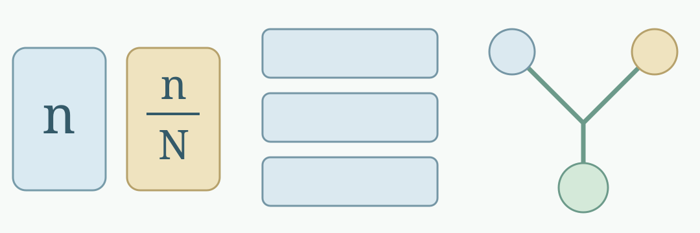
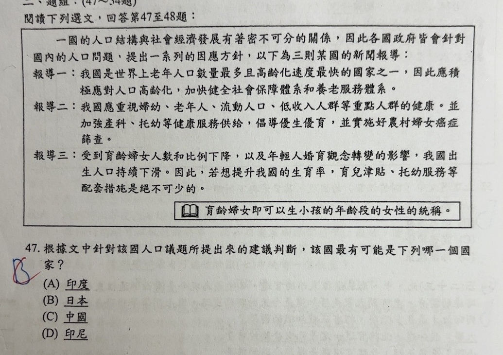

分享原卷｜第47題
完整原題
作答所需文章／材料
閱讀下列選文，回答第47至48題： 一國的人口結構與社會經濟發展有著密不可分的關係，因此各國政府皆會針對國內的人口問題，提出一系列的因應方針，以下為三則某國的新聞報導： 報導一：我國是世界上老年人口數量最多且高齡化速度最快的國家之一，因此應積極應對人口高齡化，加快健全社會保障體系和養老服務體系。 報導二：我國應重視婦幼、老年人、流動人口、低收入人群等重點人群的健康。並加強產科、托幼等健康服務供給，倡導優生優育，並實施好農村婦女癌症篩查。 報導三：受到育齡婦女人數和比例下降，以及年輕人婚育觀念轉變的影響，我國出生人口持續下滑。因此，若想提升我國的生育率，育兒津貼、托幼服務等配套措施是絕不可少的。 育齡婦女即可以生小孩的年齡段的女性的統稱。根據文中針對該國人口議題所提出來的建議判斷，該國最有可能是下列哪一個國家？
(A) 印度
(B) 日本
(C) 中國
(D) 印尼
先想一想，再查看答案、解說與原圖
原卷作答：原卷藍筆B，紅筆訂正C。
(C) 中國
逐項解析
| 選項與原句 | 判讀 | 句意與判斷理由 |
|---|---|---|
| (A) 印度 | 不選 | 人口結構相對較年輕，與三則報導整體語境較不符。 |
| (B) 日本 | 不選 | 高齡人口比例高，但不能因此把老年人口絕對數及其餘政策用語忽略。 |
| (C) 中國 | 應選 | 老年人口絕對數、流動人口、養老與優生優育等整體語境最吻合。 |
| (D) 印尼 | 不選 | 與本題老年人口數量及中國式政策用語的組合較不符。 |
詳細說明與解題步驟
不能只抓「高齡化」就直接選日本，必須合看三則報導。老年人口「數量最多」、流動人口、低收入人群、養老服務、優生優育、農村婦女與育齡婦女人數下降等組合語境，最符合中國，選C。
日本的高齡人口比例很高，不等於老年人口絕對數最多；本題刻意把「數量」和「比例」分開。中國早期生育政策及其後續人口結構，也與報導三相呼應。印度、印尼相較之下人口結構較年輕，與本題高齡化及相關政策語境不如中國貼合。
原題是依這份新聞材料作判讀，未標報導年份，不拿現在每項人口指標的即時排名替換或過度延伸原題。
左n＝老年人口數；右n/N＝老年人口比例，N是總人口。

① 老年人口數量，和比例不同
數量問老年人口共有多少人；比例還要除以總人口。某國老年人口比例高，不表示它的老年人口絕對數一定最多。
把三則資料一起使用
報導一｜老年人口數量多養老與社會保障。
報導二｜流動人口、農村婦女婦幼健康、優生優育。
報導三｜出生人口持續下滑育齡婦女、托幼與津貼。
↓ 整合線索，不只看單一詞
組合語境最符合中國
② 三則報導，找共同的國家語境
材料不只提高齡化，也提流動人口、養老服務、優生優育、農村婦女，以及育齡婦女人數下降。這組線索最符合中國。
從單一印象改成整體判讀
只看高齡化：線索不足不等於已判定日本。
↓ 補回另外兩則報導
合看數量、群體與生育政策依原題材料判斷C中國。
原題未標報導年份，不用現在每項排名取代原材料。
③ 不能看到高齡化，就直接選日本
日本的高齡人口比例高，是容易聯想到B的原因；但不能忽略題文的絕對數及其餘政策語境。依這份材料判讀，應選C。
④ 數量不等於比例，三則報導要合讀
答案 C：中國
- 老年人口數量≠老年人口比例。
- 把三則報導的政策與群體語境合起來讀。
- 依原題新聞判國家，不延伸成現在所有人口指標排名。
核對註記：已實開真正上傳原卷及本題裁切成品，核對完整題幹、全部選項、必要材料與解說。未提供實際考試日期，日期取本題首次使用者訊息（台灣時間）；無冊次或課次證據，歸綜合。
原圖（僅本題）
